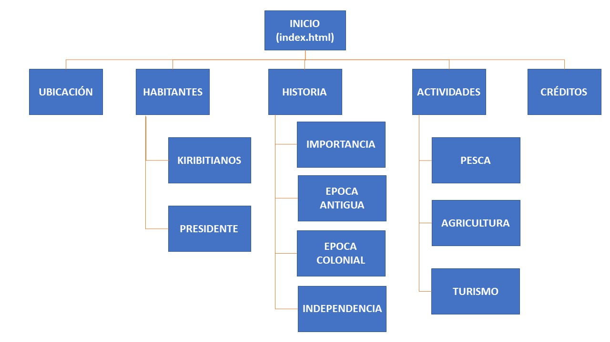

Inicio
Ubicación
Habitantes
Historia
Actividades
Créditos
Nicolás Campuzano Angulo
Gráfica Interactiva 2019-II
Referencias
Información e imagenes
https://es.wikipedia.org/wiki/Kiribati
https://es.wikipedia.org/wiki/Lenguas_micronesias
https://datosmacro.expansion.com/demografia/poblacion/kiribati
https://es.wikipedia.org/wiki/Taneti_Mamau
https://www.datachaco.com/kiribati-el-primer-pais-que-podria-desaparecer-el-cambio-climatico-n134365
http://europa-azul.es/kiribati/
https://www.elespanol.com/ciencia/20190107/kiribati-primer-pais-desaparecera-clima/362464803_0.html
Solo imagenes
https://www.nationalgeographic.com.es/naturaleza/grandes-reportajes/kiribati-contra-viento-y-marea-2_9768/5
Vídeos
https://www.youtube.com/watch?v=Pg6a-lkQnc4
https://www.youtube.com/watch?v=fvNrOTXZsRs
Mapa del sitio
